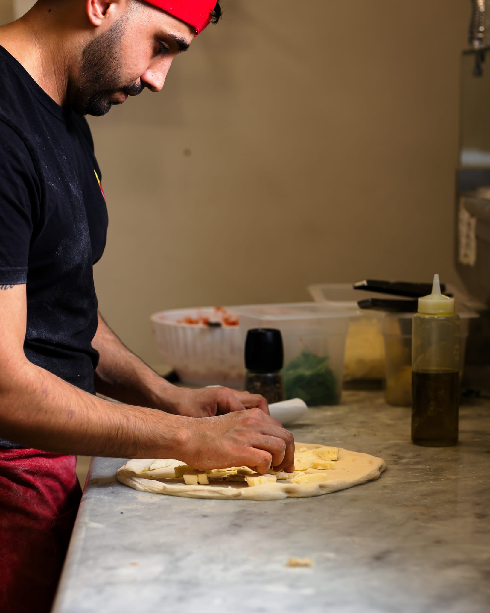

"Ho provato questa pizzeria e la qualità degli ingredienti è indiscutibile: si sente che sono freschi e selezionati."

Dalla scelta degli ingredienti alla cottura, ogni pizza nasce con cura.
Da Il Cornicello puoi scegliere tra impasto sottile e impasto più alto alla napoletana, sempre ben cotto, leggero e ricco di sapore. Ogni pizza è preparata con attenzione per offrire un'esperienza semplice, buona e autentica.
Chi siamo